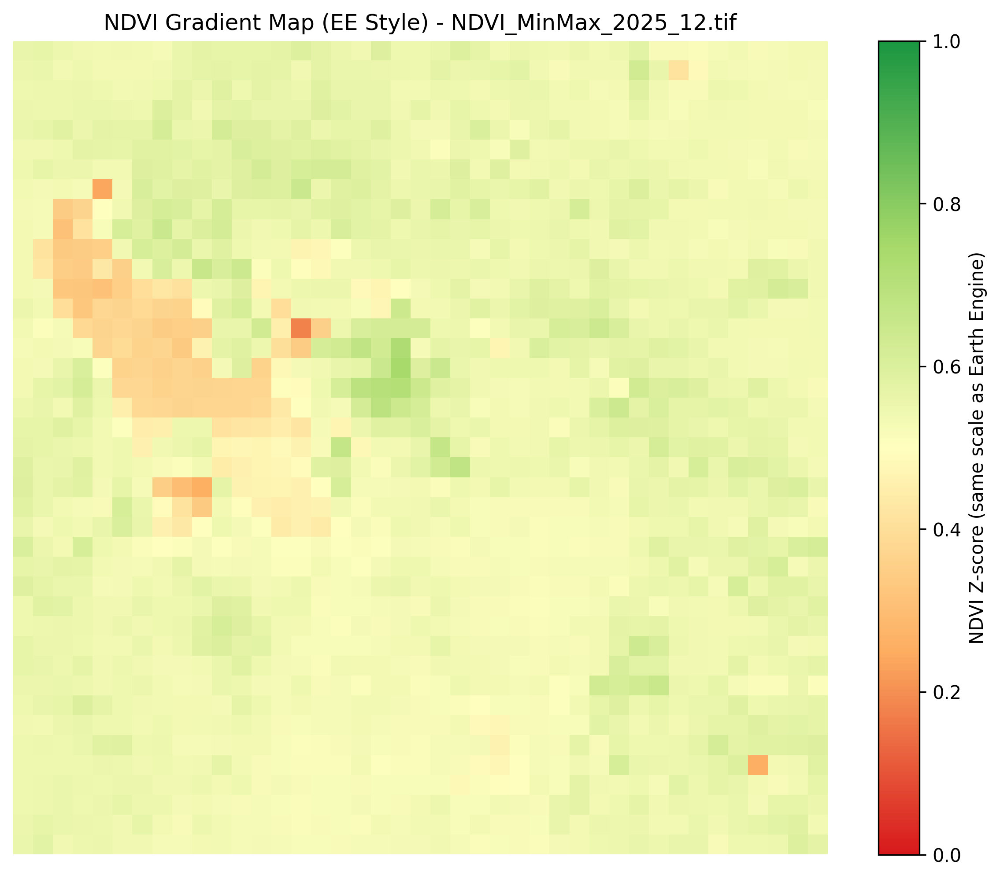
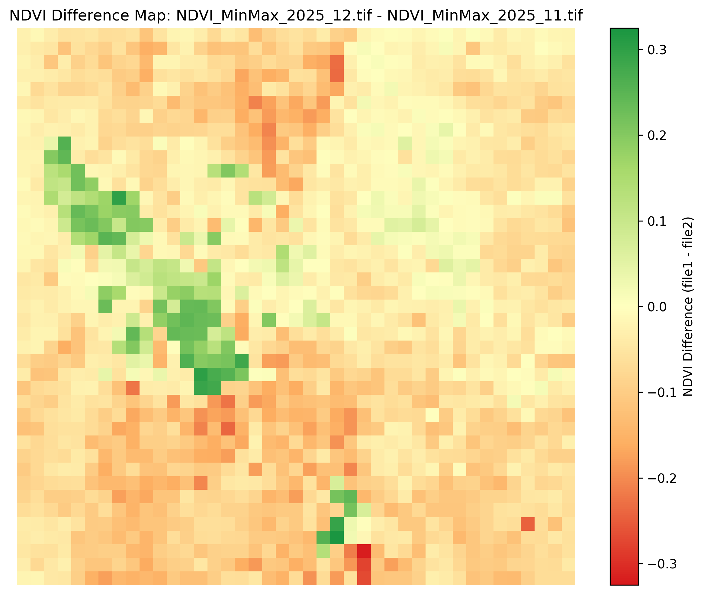
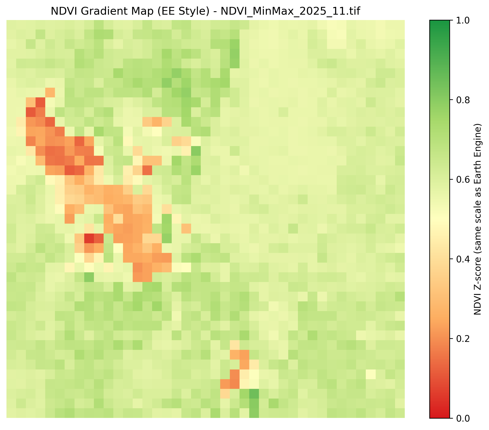
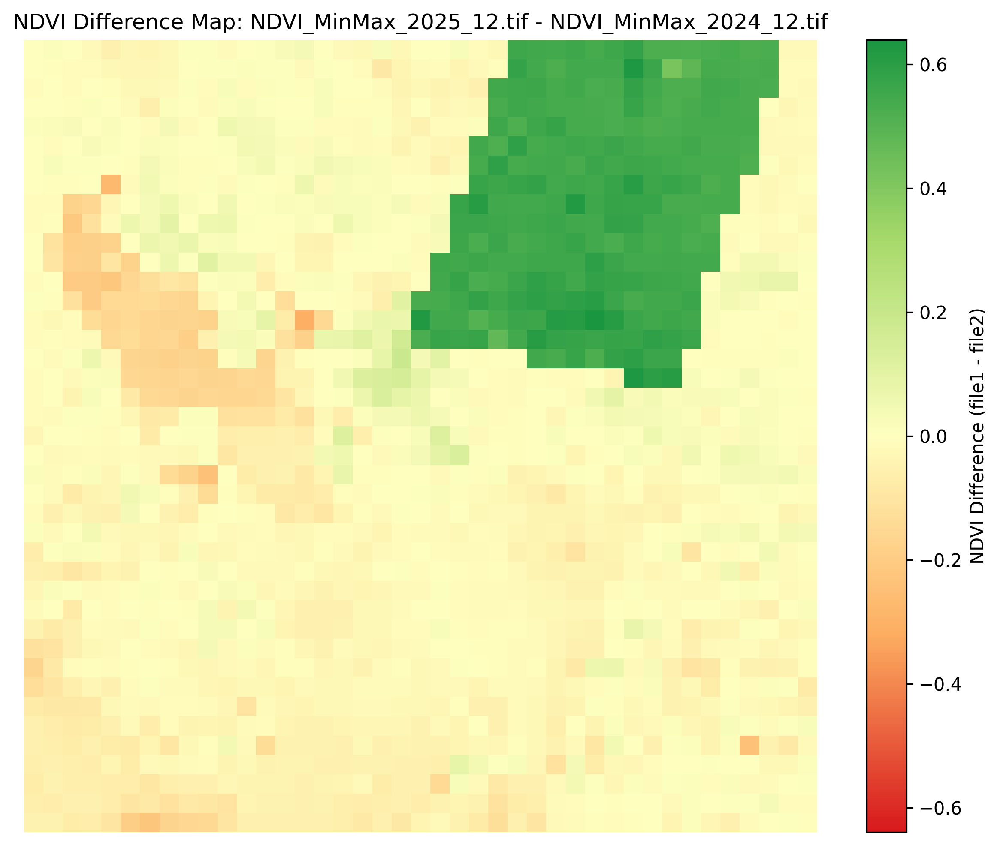

Monthly Report, December 2025
During December 2025, we see an NDVI map of the Wasatch Front with values much less prominent than November. The NDVI values across the Wasatch Front seemed to hover in between leves of 0.6-0.8 across a min-max normalized scale of 0-1. The Great Salt Lake seemed to hover around levels of around 0.1-0.3, which while this is higher than last month, it is important to note that NDVI is a relative index, so it measures compared to the surrounding area. The Great Salt Lake increasing in NDVI is likely not an increase in vegetation, and rather a decrease in a surrounding NDVI, leading to a lesser deviation.
12/25 Map:
In addition, we also measured last month's (November 2025) median NDVI for comparison, which showed a substantial decrease in the last month (disregarding the lake, as explained above). The difference map below illustrates the loss in vegetation, which is expected for winter months especially as snowfall can mask vegetation. Additionally, due to the late winter this year, this could be a byproduct of a substantial amount of snow precipitation in December, while there was little in November.
11/25-12/25 Difference:
11/25 Map:
Another thing we saw was the slight decrease in overall vegetation from December 2024 to December 2025, although it was by no means as substantial as the decrease from November 2025 - December 2025. This could be due to the warmer winter we've had this year, as regional drought and temperature conditions reported by NOAA provide contextual support for the observed interannual NDVI decline between December 2024 and December 2025.
Works Cited
Filler to actually make a genuine report here